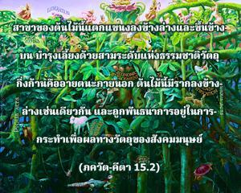
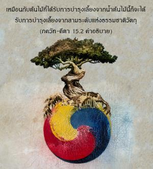
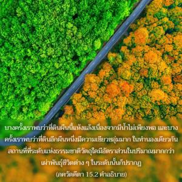
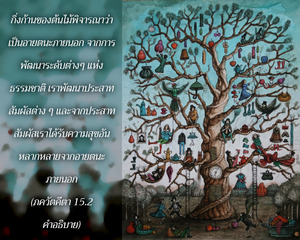

สาขาของต้นไม้นี้แตกแขนงลงข้างล่างและขึ้นข้างบน บำรุงเลี้ยงด้วยสามระดับแห่งธรรมชาติวัตถุ กิ่งก้านคืออายตนะภายนอก ต้นไม้นี้มีรากลงข้างล่างเช่นเดียวกัน และถูกพันธนาการอยู่ในการกระทำเพื่อผลทางวัตถุของสังคมมนุษย์




ได้อธิบายถึงต้นไทรนี้ต่อไปอีกว่ามีสาขาแยกแขนงออกไปทุกทิศทาง ในส่วนล่างมีปรากฏการณ์อันหลากหลายของสิ่งมีชีวิต เช่น มนุษย์ สัตว์ ม้า วัว สุนัข แมว ฯลฯ ชีวิตเหล่านี้สถิตในส่วนล่างขณะที่ส่วนบนเป็นรูปของสิ่งมีชีวิตที่สูงกว่า เช่น เทวดา คนฺธรฺว และเผ่าพันธุ์ชีวิตอื่นๆที่สูงกว่ามากมาย เหมือนกับต้นไม้ที่ได้รับการบำรุงเลี้ยงจากน้ำต้นไม้นี้ก็จะได้รับการบำรุงเลี้ยงจากสามระดับแห่งธรรมชาติวัตถุ บางครั้งเราพบว่าที่ดินผืนนี้แห้งแล้งเนื่องจากมีน้ำไม่เพียงพอ และบางครั้งเราพบว่าที่ดินอีกผืนหนึ่งมีความเขียวชอุ่มมาก ในทำนองเดียวกันสถานที่ที่ระดับแห่งธรรมชาติวัตถุใดมีอัตราส่วนในปริมาณมากกว่าเผ่าพันธุ์ชีวิตต่างๆในระดับนั้นก็ปรากฏ
กิ่งก้านของต้นไม้พิจารณาว่าเป็นอายตนะภายนอก จากการพัฒนาระดับต่างๆแห่งธรรมชาติเราจะพัฒนาประสาทสัมผัสต่างๆ และจากประสาทสัมผัสเราได้รับความสุขอันหลากหลายจากอายตนะภายนอก ยอดของสาขาต่างๆคือ ประสาทสัมผัส เช่น หู จมูก ตา ฯลฯ ซึ่งยึดติดอยู่กับความเพลิดเพลินกับอายตนะภายนอก กิ่งก้านคืออายตนะภายนอก เช่น เสียง รูป สัมผัส ฯลฯ รากรองคือความยึดติดและความเกลียดชัง ซึ่งเป็นผลพลอยได้ของความทุกข์และความสุขทางประสาทสัมผัสอันหลากหลาย แนวโน้มที่จะเป็นคนใจบุญหรือเป็นคนใจบาปพิจารณาว่าพัฒนาจากรากรองเหล่านี้ซึ่งแผ่ขยายไปทุกทิศทาง รากอันแท้จริงมาจาก พฺรหฺมโลก และรากอื่นๆอยู่ในระบบดาวเคราะห์มนุษย์ หลังจากรื่นเริงกับผลบุญที่ได้ไปอยู่ในระบบดาวเคราะห์ที่สูงกว่าแล้วเขาจะตกลงมาในโลกนี้ และสร้างกรรมหรือกิจกรรมเพื่อผลทางวัตถุต่อไปเพื่อความเจริญก้าวหน้าทางวัตถุ ดาวเคราะห์ของมนุษย์นี้พิจารณาว่าเป็นสนามแห่งกิจกรรม